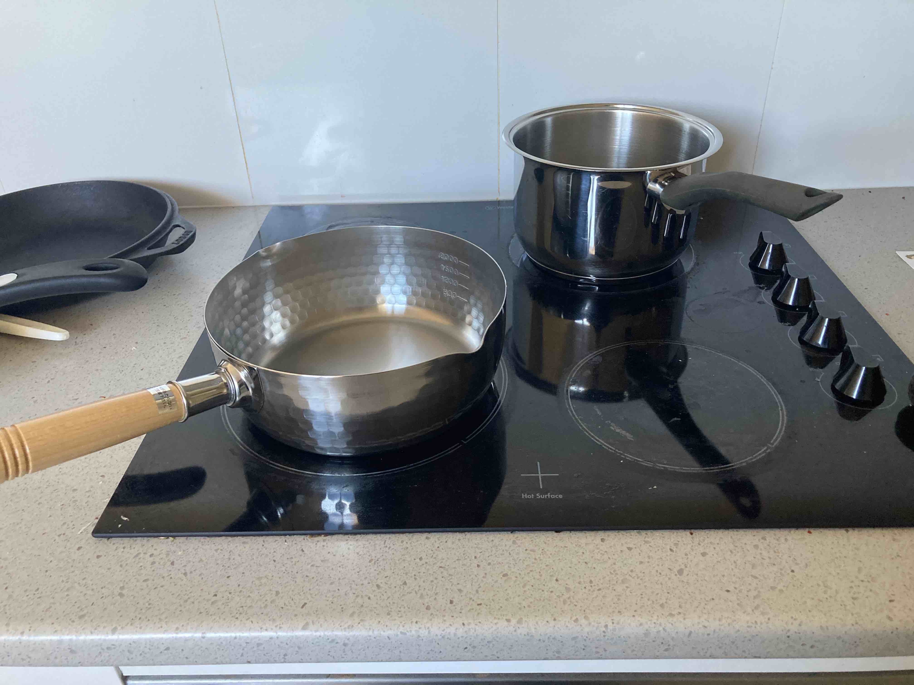

Casarecce Pasta with Sardines

A creamy, highly nutritious bowl of pasta
Like all Italian food, pasta can have a bad rep as a carb-heavy bowl of stodge. However, when cooked properly (read, traditionally) it is just about the healthiest thing you could possibly have for dinner.
Pasta is a true cornerstone of the Mediterranean diet. When broken down to its core components, it is the quintessential image of modern nutrition: 2 parts vegetables, 1 part grain, 1 part protein. It doesn't hurt that it tastes fantastic!
Be sure to save the pasta water! If you don't know the importance of this, be sure to look it up! It's essential to Italian cooking!
Use "Clancy's Soffrito" on the previous page as a base. The type of fish and the type of pasta can be subbed out for any other, ie mackerel and spaghetti or salmon and penne. You can even mix two kinds of fish, ie sardines and oysters, and make a linguine marinara!
Note: I've specified tinned sardines in brine, but that's optional. I prefer brine as there's less cleanup afterward but you could use sardines in olive oil instead
Note: For finishing pasta, I've found the best pan is the "Yukihara" saucepan series. It's a terrific, Made in Japan cookware brand that is simply perfect for pasta finishing.
Ingredients (serves two):
- 250g "Clancy's Soffritto"
- 125g "Barilla" Casarecce (dry)
- 125g John West sardines in brine (drained and rinsed)
- 50g "Mutti tomato puree" (alternatively your favourite passatta)
- 25g Red Wine (optional. I like sangiovese.)
- 1 tbsp Extra Virgin Olive Oil to emulsify
- Parmagiano Reggiano to grate
- Basil to garnish
- 1 tsp Salt for the pasta water.
How to cook:
- Boil a kettle of water and start preheating the saucepan for the pasta. Be sure to put in a few cm of water so it doesn't boil down and damage the pan.
- Put the Yukihara saucepan on the hotplate at a very low heat.
- Put all the "Clancy's Soffritto", passatta (tomato puree) and red wine (optional) in the Yukihara pan. Mix around a little.
- Drain and rinse the sardines and put them in the Yukihara pan as well. Crush them a little with your wooden spoon.
- Once the water is boiled, add the salt in and mix. Add the pasta and cook to the packet's specification minus one minute
- Once the pasta is finished cooking, save at least a cup of pasta water, drain the pasta and put it in the Yukihara pan along with the soffritto and fish. Now the fun begins!
- Mix, mix, MIX! Add the pasta water, a bit at a time, and MIX! Do this for two minutes as it will take the undercooked pasta to a nice al dente texture.
- Once the two minutes is up, take the now fully cooked pasta off the heat. Mix in the Olive Oil and breathe in the perfectly emulsified creaminess of your homemade pasta.
- Grate on some Parmagiano Reggiano. You can do this inside the pan and mix it in, or if you dislike much of a cleanup, plate up the pasta first.
- Finally, garnish with some fresh basil. Voila! Bon appetite!